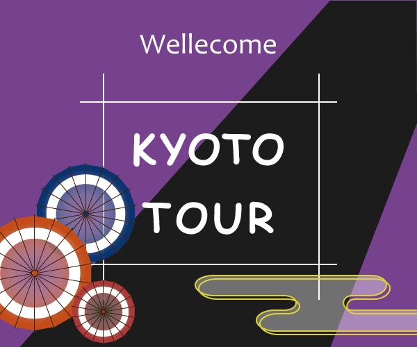

学校で作成した京都ツアーのバナーを修正した。
使用したツール
Illustrator
修正にかかった時間
３０分
改善点


・KYOTO TOURの文字をより見やすくするために太く・大きくした。また、枠も太くして影をつけて立体的に見えるように工夫した。
・背景の直線は川を意識して曲線に変えて動きを出しました。
・名前のついていないレイヤーが複数あり編集の際に困ったので、適切な名前を付けたり、パーツによってレイヤーを変えたり、きれいに整頓をしながら仕事をする大切さが理解できた。